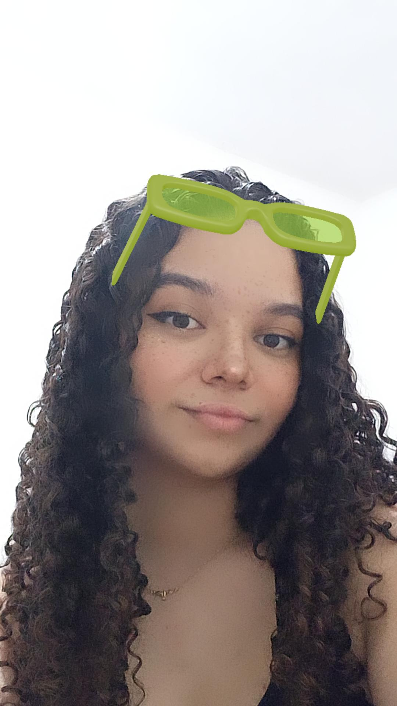

Nicolle Cristina C. Durães
Sou estudante do Colégio Técnico da UFMG - COLTEC, cursando Desenvolvimento de Sistemas e terminando o 3° (terceiro) ano do Ensino Médio e Técnico. Procuro uma empresa que me dê uma oportunidade de me desenvolver e poder crescer profissionalmente. Tenho grande disposição para aprendizado e sou capaz de oferecer um serviço de qualidade.

Formações Acadêmicas
- UMEI Regino Inocêncio
Formatura: 2009/2011
- Escola Municipal Coronel Antônio Augusto Diniz Costa
Formatura: 2012/2021
- COLTEC - Colégio Técnico da UFMG
Formatura: 2022/2024
Experiência Profissional
Estagiária
Bolsa de Iniciação Científica na UFMGInício/Término: 2023/2025
O Projeto AUTIS consiste em desenvolver um site para ajudar terapeutas com seus pacientes. Nesse site, será possível criar jogos de uma maneira mais fácil e simples, ajudando pacientes com dificuldades de aprendizagem. Tanto terapeutas quanto pacientes poderão utilizar a plataforma, se assim desejarem. Ainda está em desenvolvimento.
Habilidades na Programação
- C / C++
- Unity
- C#
- HTML
- CSS